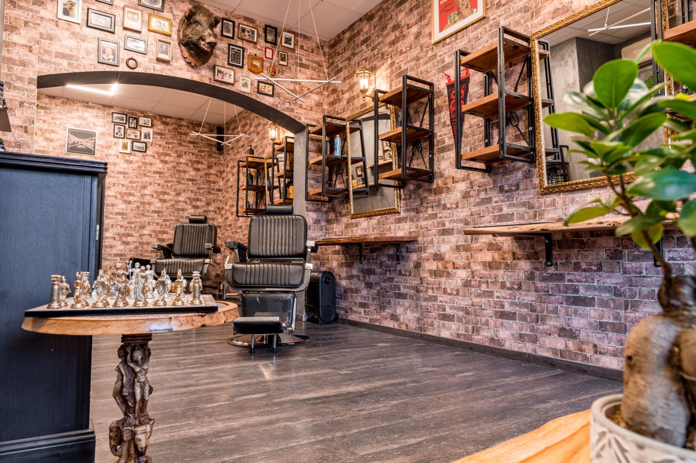
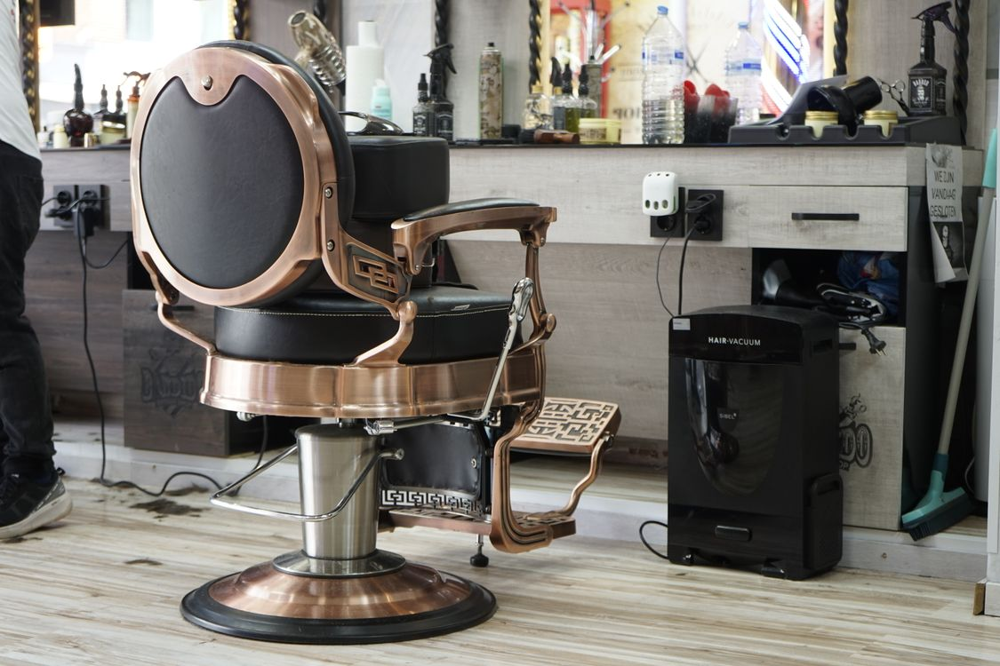

КАМ’ЯНЕЦЬ-ПОДІЛЬСЬКИЙ · ГУНСЬКА, 32
Ваш стиль.
Королівський
підхід.
Точна стрижка, доглянута борода та час для себе. Місце, де деталі мають значення.
Записатися на стрижку ↗
Ваша пауза.
Ваш новий образ.
ПРОСТО ОБЕРІТЬ СВОЄ
Майстерність
у кожній деталі.
Від лаконічної стрижки до повного догляду.
Ціна та тривалість — перед записом.
Завантажуємо послуги…

Ілюстративне фото · PexelsНАШ ФІРМОВИЙ РИТУАЛ
Королівський
догляд.
Повний образ і час, який належить лише вам. Від першої консультації до фінального штриха.
- ✦Починаємо з вас
Обговорюємо бажаний образ, форму стрижки та особливості волосся.
- ✦Стрижка й укладання
Миття голови, чоловіча стрижка з опрацюванням деталей і фінішне укладання.
- ✦Борода та чисті контури
Моделювання бороди або бриття, теплий рушник і акуратне оформлення контурів.
- ✦Завершальний догляд
Заспокійливий догляд після бриття, засіб для бороди й поради для домашнього укладання.
ЛЮДИНА, ЯКІЙ ДОВІРЯЄТЕ
Ваш майстер.
Знайомство починається тут.
Далі — ваша найкраща стрижка.
ОНЛАЙН-ЗАПИС · THE ROYAL
Записатися
на стрижку.
Оберіть послугу, майстра й зручний час. Ми підтвердимо ваш запис одразу після збереження.
До візиту менше двох годин?
Зателефонуйте нам — уточнимо можливість.
ЗУСТРІНЕМОСЯ В THE ROYAL
Знайдіть нас
у центрі міста.
АДРЕСА
вулиця Гунська, 32
Кам’янець-Подільський
Як ми працюємо з вашими даними
Ім’я, телефон і коментар потрібні для запису та зв’язку щодо візиту. Доступ мають уповноважені працівники. Ключ керування записом зберігається на вашому пристрої; не передавайте його стороннім. Для відновлення на іншому пристрої збережіть приватне посилання після бронювання. Для уточнення, видалення контактних даних або допомоги з відновленням доступу зверніться за телефоном барбершопу. Аналітика фіксує лише типи основних дій без телефонів, імен і ключів. Аналітичні події зберігаються до 90 днів; технічні — до 30 днів. Історія візитів і фінансовий аудит зберігаються для обліку.